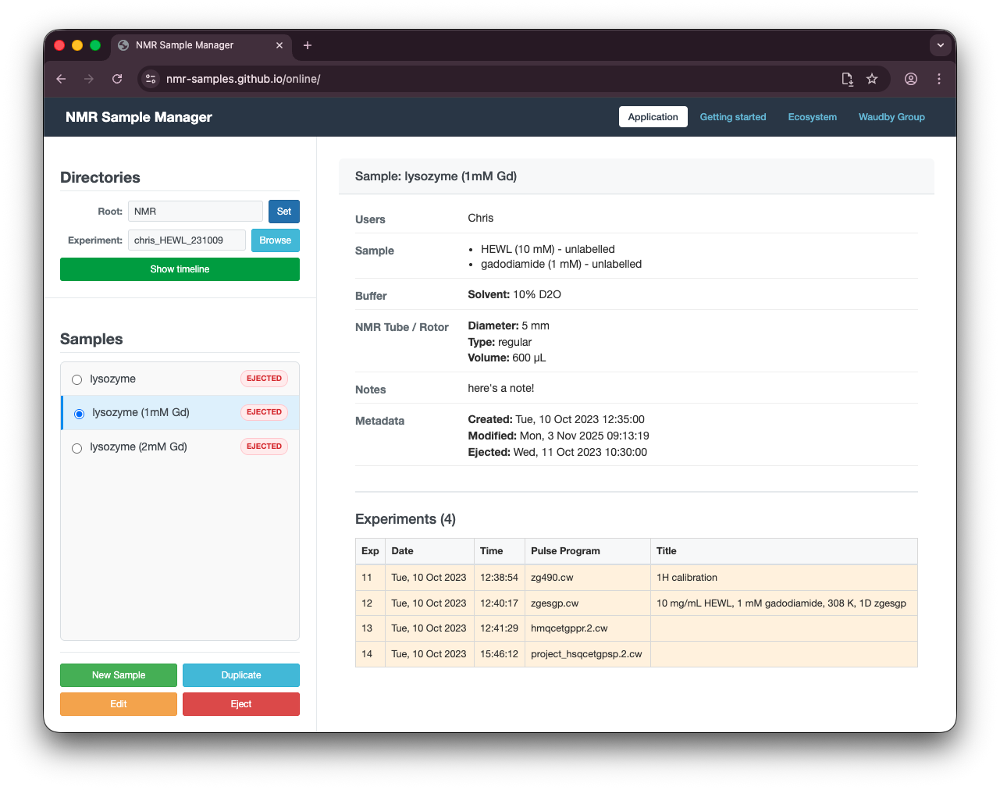
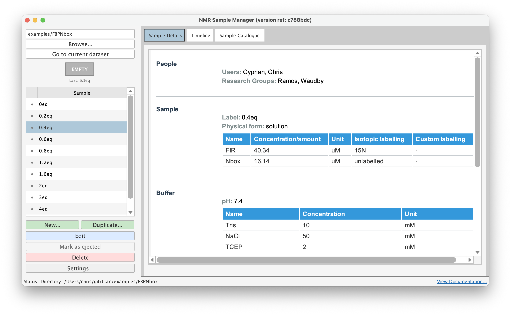

NMR Samples
Structured metadata for NMR samples, stored as JSON files alongside your experiment data. Record sample composition, buffer conditions, tube details, and laboratory references in a format that's searchable, portable, and machine-readable. All tools in the ecosystem read and write the same open schema.
Two Ways to Use It
Online — A browser-based sample manager. No installation required (Chrome/Edge). All data stays on your computer. Also available for offline use.
Topspin —
An integrated sample manager for Topspin. Provides a GUI
(samples) and drop-in replacements for injection and ejection commands
(ija, eja, sxa) that capture metadata at
the point of use.


Ecosystem
Sample metadata files are portable and supported by several tools beyond the two apps above: NMRTools.jl (Julia library for NMR data handling), NOMAD (v3.6.3+), and NMR TITAN (development version).
Contributing
Report bugs or request features via GitHub Issues on the relevant repository. For schema changes, open an issue on the schema repository with a clear use case. See the GitHub organisation for development details.
Developed by Chris Waudby, UCL School of Pharmacy. c.waudby@ucl.ac.uk